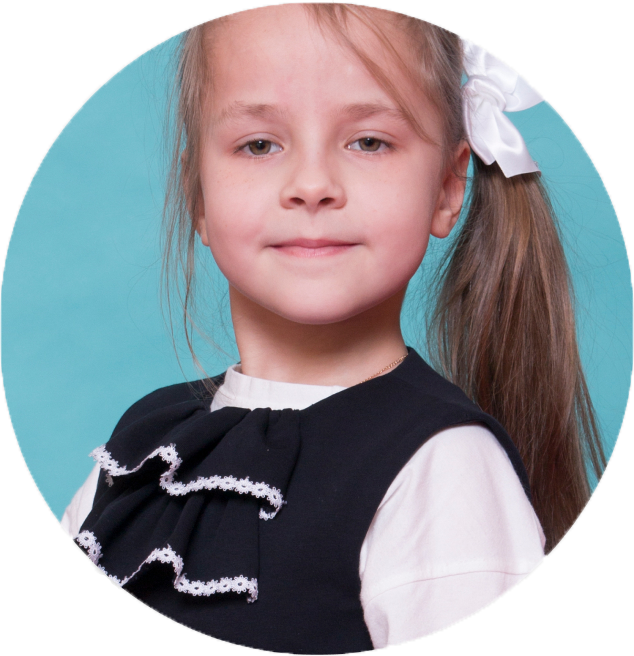

Калиниченко Анастасия
Ивановна
Анастасия обладает широким кругозором, любит читать. Умеет выражать собственное мнение, четко формулирует свои мысли.
Всегда сфокусирована на выполняемой деятельности, однако может легко переключиться на решение другой задачи. Отмечена высокая скорость освоения учебной программы и легкость, с которой девочка воспроизводит полученные знания.
